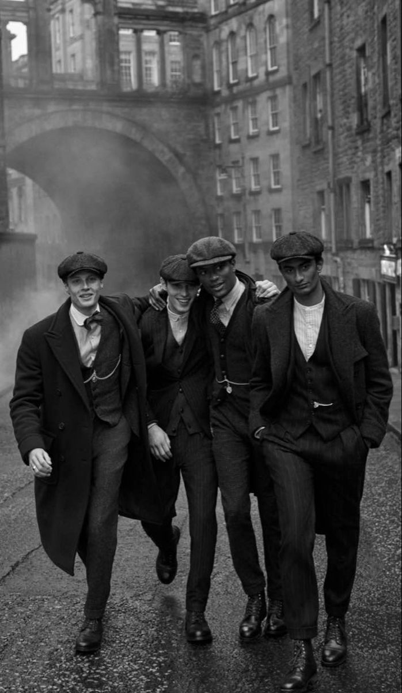

Contexto Histórico
La década de 1920, también conocida como los "Años Locos" o la "Era del Jazz", marcó un antes y un después en la moda. Fue una época de cambios sociales, especialmente para las mujeres, que comenzaron a expresar su libertad a través de su forma de vestir.
Moda Femenina
Las mujeres adoptaron vestidos sueltos con flecos, perlas largas, boinas, y cortes de cabello tipo bob. El corsé fue abandonado en favor de siluetas más rectas y cómodas. Las "flappers" simbolizaron este nuevo espíritu rebelde.

Moda Masculina
Los hombres usaban trajes a medida con cortes más ajustados, sombreros fedora y zapatos de charol. El estilo dandy también ganó popularidad entre los jóvenes urbanos.
Accesorios y Belleza
El maquillaje cobró protagonismo: labios rojos, ojos delineados y cejas finas. Los accesorios como collares de perlas, plumas, guantes largos y tocados eran esenciales para un look glamuroso.